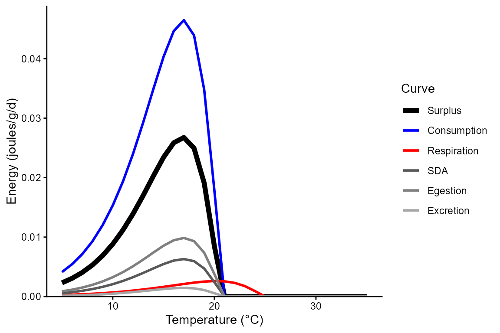
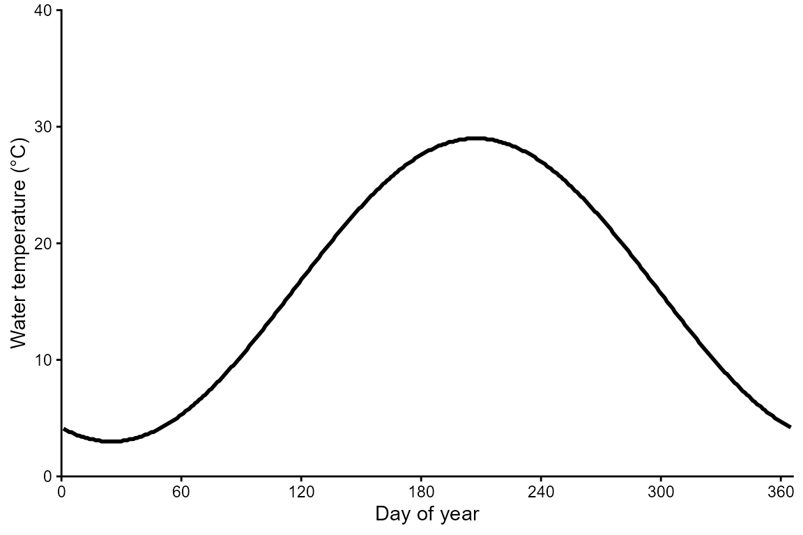
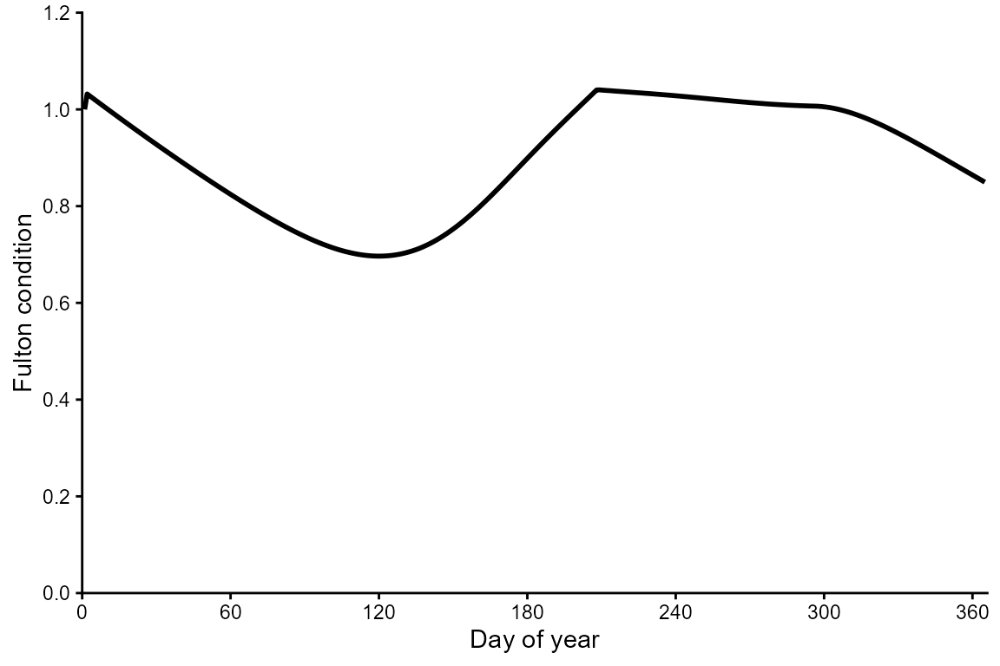

Getting Started
Getting_Started.RmdVignette objectives
- Learn fundamentals of bioenergetics modeling (BEM) by visualizing temperature- and mass-dependent physiological rates.
- Explore effects of temporal extrinsic parameters like temperature, the proportion of maximum consumption (CP), the activity multiplier (ACT), and prey energy density.
- Compare bioenergetics of a representative warm-water and cold-water species.
- Simulate daily bioenergetics and growth of a fish.
Install and load fishyenergy
remotes::install_github("bomeara/fishyenergy")
library(FishyEnergy)Temperature-dependent physiological rates
Let’s look at temperature-dependent physiological rates of two species. Start by loading the intrinsic bioenergetics parameters of five example species. These parameters have been published by various authors since the 1980s and are available from Fish Bioenergetics 4.0.
Next, retain only one focal species, largemouth bass Micropterus salmoides, and look at these intrinsic parameters.
options(width = 500)
parms.micsal <- parms_fb4[parms_fb4$genus_species == "micropterus_salmoides",]
parms.micsal
#> genus_species LifeStage Source lwA lwB CEQ CA CB CQ CTO CTM CTL CK1 CK4 REQ RA RB RQ RTO RTM RTL RK1 RK4 SDA FA UA pred_ED
#> 2 micropterus_salmoides adult Rice et al. 1983 0.0226 2.781 2 0.33 -0.325 2.65 27.5 37 NA NA NA 1 0.008352 -0.355 0.0313 0.0196 0 0 1 0 0.15848 0.104 0.08817 4184- The first column shows the Latin name in snake case.
- Other columns like lwA and lwB are the intercept and slope of the length-weight equation acquired from FishBase.
- Still other columns like CA and CB are the intercept and slope of the mass dependent consumption equation (a negative power law).
- There’s also specific dynamic action (i.e., the proportion of energy consumed allocated to the cost of digestion), predator energy density, and many other variables defined by Hanson et al. (1997).
Plot largemouth bass curves
Let’s visualize the effect of temperature on consumption, respiration, and various other physiological rates for largemouth bass. To do this, we use the bem_curve function which needs to be supplied with a few essential arguments: - Set the mass to a reasonable amount (454 grams which is ~ 1 pound). - We plot this curve over ecologically realistic temperature range of 5°C to 35°C. - We specify the intrinsic parameters for largemouth bass and the corresponding consumption and respiration functions… 2 and 1, respectively.
bem_curve(M = 454,
T = 5:35,
CP = 1.0,
ACT = 1.0,
prey_ED = 4000,
parms.intrinsic = parms.micsal,
C_eq = 2,
R_eq = 1)
Notice that the consumption curve increases exponentially to an optimum temperature of ~28°C and then declines at higher temperatures. This curve shape is characteristic of consumption function 2. In contrast, we see that the respiration curve increases exponentially over the full range of temperatures (i.e., there is no optimum beyond which respiration declines). This curve shape is characteristic of respiration function 1.
Compare the above curves to those plotted when the activity multiplier is increased from 1.0 to 4.0, thus simulating a predator fish with 4 times the metabolic demand of the previous predator fish at rest. Pursuing prey, avoiding predators, and seeking reproductive opportunities typical ecological processes that increase metabolic demand beyond rest. Notice that the red respiration curve is higher and consequently the black surplus curve is lower.
bem_curve(M = 454,
T = 5:35,
CP = 1.0,
ACT = 4.0,
prey_ED = 4000,
parms.intrinsic = parms.micsal,
C_eq = 2,
R_eq = 1)
We can also reduce the proportion of consumption from 1.0 to 0.5 to simulate ecological processes both bottom-up and top-down processes. Notice that the blue consumption curve is lower and consequently the black surplus curve is also lower.
bem_curve(M = 454,
T = 5:35,
CP = 0.5,
ACT = 4.0,
prey_ED = 4000,
parms.intrinsic = parms.micsal,
C_eq = 2,
R_eq = 1)
Although we do not change prey energy density in this vignette, one can easily do this via the prey_ED argument to simulate different diets and/or prey quality.
Plot brook trout curves
It is clear that largemouth bass perform well at higher temperatures which is why we know them to be members of the warmwater thermal guild. Let’s visualize the effect of temperature on the same physiological rates for a putative coldwater species, the brook trout Salvelinus fontinalis. Notice that the consumption and respiration equations for brook trout are 2 and 2, respectively. Notice that we use the respiration2 equation for brook trout rather than the respiration1 equation. See Hanson et al. (1997) for details.
bem_curve(M = 454,
T = 5:35,
CP = 1.0,
ACT = 1.0,
prey_ED = 4000,
parms.intrinsic = parms_fb4[parms_fb4$genus_species == "salvelinus_fontinalis",],
C_eq = 2,
R_eq = 2)
Growing a fish
First, simulate (i.e., create a fake) temperature time series with mean daily water temperature for every day of a calendar year. We do this using a sine wave function, setting mean annual temperature and annual amplitude to values that are realistic for a temperate waterbody that does not freeze-over during the winter.
parm.tmean <- 16 # mean annual temperature
parm.ampli <- 13 # temperature amplitude
julian <- seq(1,365,1)
WT_mean <- round((parm.ampli * sin((2*(pi/365)) * julian - 2) + parm.tmean) * 10, digits = 0)
temps_fake <- data.frame(julian, WT_mean)Plot the time series of mean daily water temperature.
library(ggplot2)
ggplot(NULL) + theme_classic() +
labs(x = "Day of year", y = "Water temperature (°C)") +
scale_x_continuous(expand = c(0,0), limits = c(0,366), breaks = seq(0, 360, 60)) +
scale_y_continuous(expand = c(0,0), limits = c(0,40), breaks = seq(0, 40, 10)) +
geom_line(aes(x = julian, y = WT_mean / 10), temps_fake, linewidth = 1)
Temporally-varying parameters
We need to load some parameters that potentially vary temporally. The dataframe has 365 rows representing each day of the year. There are five noteworthy columns (i.e., variables).
options(width = 500)
data(parms_temporal_DEFAULT)
dim(parms_temporal_DEFAULT)
#> [1] 365 6
head(parms_temporal_DEFAULT)
#> date CP ACT gsi_f gsi_m prey_ED
#> 1 1/1/2025 1 1 0 0 3698
#> 2 1/2/2025 1 1 0 0 3698
#> 3 1/3/2025 1 1 0 0 3698
#> 4 1/4/2025 1 1 0 0 3698
#> 5 1/5/2025 1 1 0 0 3698
#> 6 1/6/2025 1 1 0 0 3698- CP is the proportion of maximum consumption and decrease as prey quantity declines or as exploitative competition increases.
- ACT is the activity multiplier where a value of zero would indicate no metabolic costs beyond being at rest. Maintaining position in a flowing stream, avoiding predators, pursuing prey, and engaging in reproductive behavior increase ACT.
- The next two parameters (gsi_f and gsi_m) allow the user to model somatic growth of a reproductively mature fish that allocates some energy to gonadal tissue. Separate parameters are provided for females and males because the sexes invest different amounts of energy to their gonads–gsi_f and gsi_m, respectively. The default data assume a reproductively immature fish (i.e., gsi = 0).
- Modifying prey energy density (prey_ED) over the year can simulate ontogenetic diet shifts or changes in prey quality. There are numerous published estimates of prey energy density for common prey items like invertebrates, fish, and so on (see Appendix B from Hanson et al. 1997).
Simulating daily bioenergetics
Use the bem_grow function to simulate the daily bioenergetic budget of a largemouth bass. Start the fish at 454 grams which is ~1 pound. We need to load some parameters that potentially vary temporally.
grow.micsal <- bem_grow(start_M2 = 454,
temperature = temps_fake,
parms.intrinsic = parms.micsal,
parms.temporal = parms_temporal_DEFAULT,
C_eq = 2,
R_eq = 1)The output of bem_grow is quite extensive. There are 365 rows representing each day of the year and 43(!) variables. Let’s have a look at those variables:
options(width = 500)
head(grow.micsal)
#> julian WT_mean pred_ED gsi_m gsi_f CP ACT prey_ED C1_ins C2_ins R1_ins R2_ins F1_ins F2_ins U1_ins U2_ins SDA1_ins SDA2_ins MS1_ins MS2_ins MG1_ins MG2_ins M1_ins M2_ins C1_cum C2_cum R1_cum R2_cum F1_cum F2_cum U1_cum U2_cum SDA1_cum SDA2_cum MS1_cum MS2_cum MG1_cum MG2_cum M1_cum M2_cum L_cum K
#> 1 1 4.1 4184 0 0 1 1 3698 0.000 0.000 0.000 0.000 0.000 0.000 0.000 0.000 0.000 0.000 0.000 0.000 0 0 0.000 0.000 0.000 0.000 0.000 0.000 0.000 0.000 0.000 0.000 0.000 0.000 0.000 454.000 0 0 0.000 454.000 35.2587 1.000000
#> 2 2 4.0 4184 0 0 1 1 3698 1.537 5682.434 0.490 6640.868 0.160 590.973 0.135 501.020 0.218 806.895 -2857.323 -0.683 0 0 -2857.323 -0.683 1.537 5682.434 0.490 6640.868 0.160 590.973 0.135 501.020 0.218 806.895 -2857.323 453.317 0 0 -2857.323 453.317 35.2587 1.034197
#> 3 3 3.9 4184 0 0 1 1 3698 1.511 5587.550 0.488 6613.690 0.157 581.105 0.133 492.654 0.215 793.421 -2893.321 -0.692 0 0 -2893.321 -0.692 3.048 11269.984 0.977 13254.559 0.317 1172.078 0.269 993.674 0.433 1600.316 -5750.644 452.626 0 0 -5750.644 452.626 35.2587 1.032620
#> 4 4 3.8 4184 0 0 1 1 3698 1.486 5494.066 0.486 6586.533 0.155 571.383 0.131 484.412 0.211 780.147 -2928.408 -0.700 0 0 -2928.408 -0.700 4.533 16764.050 1.463 19841.091 0.471 1743.461 0.400 1478.086 0.644 2380.463 -8679.052 451.926 0 0 -8679.052 451.926 35.2587 1.031023
#> 5 5 3.8 4184 0 0 1 1 3698 1.484 5488.330 0.485 6579.962 0.154 570.786 0.131 483.906 0.211 779.332 -2925.656 -0.699 0 0 -2925.656 -0.699 6.017 22252.380 1.948 26421.053 0.626 2314.248 0.531 1961.992 0.854 3159.795 -11604.708 451.226 0 0 -11604.708 451.226 35.2587 1.029428
#> 6 6 3.7 4184 0 0 1 1 3698 1.459 5396.323 0.483 6552.851 0.152 561.218 0.129 475.794 0.207 766.268 -2959.806 -0.707 0 0 -2959.806 -0.707 7.477 27648.704 2.432 32973.904 0.778 2875.465 0.659 2437.786 1.062 3926.063 -14564.515 450.519 0 0 -14564.515 450.519 35.2587 1.027814- The first eight variables represent inputs that you’re already familiar with like temperature, CP, ACT, gsi, and so on.
- The remaining variables are outputs including consumption (C), respiration (R), egestion (F), excretion (U), specific dynamic action (SDA), somatic mass (MS), and gonadal mass for females and males (MG).
- The “1” version of these variables are in units of energy (joules) and the “2” version of these variables are in units of mass (grams). The “_ins” version of these variables represents instantaneous (i.e., daily) values and the “_cum” represents cumulative values (i.e., since January 1st).
- Finally, cumulative length (L_cum) and Fulton condition factor (K) are calculated from the length-weight parameters in parms_fb4. Survival (Surv) is assumed to start at 1 on January 1st and remains 1 if Fulton condition factor remains at or above 0.4 but switches to 0 if K falls below 0.4.
Plotting daily energetics
Plot the time series of m2_cum. This is the cumulative mass of the predator fish in grams.
ggplot(NULL) + theme_classic() +
labs(x = "Day of year", y = "Body mass (g)") +
scale_x_continuous(expand = c(0,0), limits = c(0,365), breaks = seq(0,360,60)) +
scale_y_continuous(expand = c(0,0), limits = c(0,4000), breaks = seq(0,4000,1000)) +
geom_line(aes(x = julian, y = M2_cum), grow.micsal, linewidth = 1)
Notice that our largemouth bass does most of its growing during the warm summer months which makes sense for this warmwater species. What doesn’t make sense is that this fish starts the year at 454 grams (~1 pound) and ends the year at a whopping 3,592 grams (7.9 pounds)! This is because we unrealistically have assumed the predator fish has limitless food (CP = 1), sets up shop in one place and never moves (ACT = 1), and allocates no energy to reproduction (gsi_ = 0).
The bem_corroborate function provides a means of estimating difficult-to-measure parameters like CP and ACT using field- or lab-derived measurements of length-at-age to identify pairs of CP and ACT values that result in realistic end-of-year mass. See the Corroboration vignette to learn this workflow.
To better visualize this summer growth, plot m2_ins. The horizontal red line is at y = 0, meaning that the predator fish has an energy deficit below this line (winter) and an energy surplus above this line (summer).
ggplot(NULL) + theme_classic() +
labs(x = "Day of year", y = "Daily mass change (g)") +
scale_x_continuous(expand = c(0,0), limits = c(0,366), breaks = seq(0, 360, 60)) +
geom_hline(yintercept = 0, color = "red") +
geom_line(aes(x = julian, y = M2_ins), grow.micsal, linewidth = 1)
Let’s manually adjust CP and ACT to see how it affects growth. If dig into the literature, CP values are often around 0.6 and ACT values are often around 1.4. Change these values in the parms_temporal_DEFAULT dataframe, re-run the bem_grow function, and then re-plot growth.
parms_temporal_DEFAULT$CP <- 0.6
parms_temporal_DEFAULT$ACT <- 1.4
grow.micsal.real <- bem_grow(start_M2 = 454,
temperature = temps_fake,
parms.intrinsic = parms.micsal,
parms.temporal = parms_temporal_DEFAULT,
C_eq = 2,
R_eq = 1)
ggplot(NULL) + theme_classic() +
labs(x = "Day of year", y = "Body mass (g)") +
scale_x_continuous(expand = c(0,0), limits = c(0,366), breaks = seq(0, 360, 60)) +
scale_y_continuous(expand = c(0,0), limits = c(0,700), breaks = seq(0, 700, 100)) +
geom_line(aes(x = julian, y = M2_cum), grow.micsal.real, linewidth = 1)
It seems reasonable that a 454 gram fish would grow to 548 grams in a year–that is, from 1.0 pounds to 1.2 pounds.
Finally, let’s look at how mass, length, and condition change over time. Bioenergetics models are biologically realistic in that they simulate daily energy balance–that is, either deficits or surpluses. Mass can decrease or increase over time whereas length can increase with energy surpluses but cannot realistically decrease when there are energy deficits. The bem_grow function uses this axiom to simulate changes in Fulton condition factor over time as demonstrated below:
The previous plot shows that the mass of the predator fish starts at 454 grams on January 1st and decreases for 120 (until ~April). The predator fish then grows in both mass and length until day 290 (~October). Plot length (cm) over time to see how length does not change during periods of energy deficit and increases when there is an energy surplus.
ggplot(NULL) + theme_classic() +
labs(x = "Day of year", y = "Total length (cm)") +
scale_x_continuous(expand = c(0,0), limits = c(0,366), breaks = seq(0, 360, 60)) +
scale_y_continuous(expand = c(0,0), limits = c(0,50), breaks = seq(0, 50, 10)) +
geom_line(aes(x = julian, y = L_cum), grow.micsal.real, linewidth = 1)
When mass decreases and length stays the same, Fulton condition should decrease.
ggplot(NULL) + theme_classic() +
labs(x = "Day of year", y = "Fulton condition") +
scale_x_continuous(expand = c(0,0), limits = c(0,366), breaks = seq(0, 360, 60)) +
scale_y_continuous(expand = c(0,0), limits = c(0,1.2), breaks = seq(0, 1.2, 0.2)) +
geom_line(aes(x = julian, y = K), grow.micsal.real, linewidth = 1)
Next steps
Now that you’ve had a crash course in the basics of bioenergetics and growing a fish, try the Corroboration vignette where you will learn to grow fish that match the growth trajectories of real fish. Reach out to package developer Matthew Troia if you have questions about fishyenergy or suggestions to make it better!